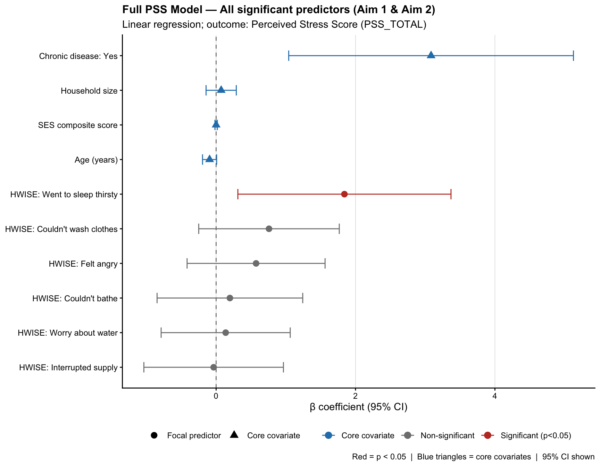
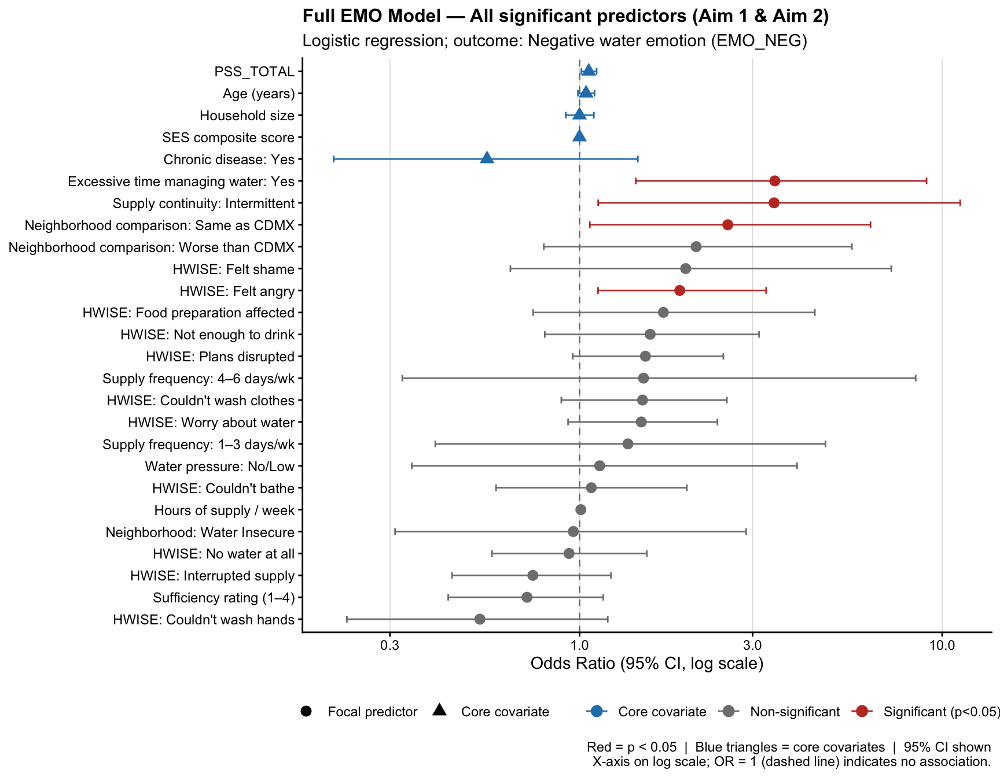

Last updated: 2026-03-27
Checks: 6 1
Knit directory: QUAIL-Mex/
This reproducible R Markdown analysis was created with workflowr (version 1.7.1). The Checks tab describes the reproducibility checks that were applied when the results were created. The Past versions tab lists the development history.
The R Markdown file has unstaged changes. To know which version of
the R Markdown file created these results, you’ll want to first commit
it to the Git repo. If you’re still working on the analysis, you can
ignore this warning. When you’re finished, you can run
wflow_publish to commit the R Markdown file and build the
HTML.
Great job! The global environment was empty. Objects defined in the global environment can affect the analysis in your R Markdown file in unknown ways. For reproduciblity it’s best to always run the code in an empty environment.
The command set.seed(20241009) was run prior to running
the code in the R Markdown file. Setting a seed ensures that any results
that rely on randomness, e.g. subsampling or permutations, are
reproducible.
Great job! Recording the operating system, R version, and package versions is critical for reproducibility.
Nice! There were no cached chunks for this analysis, so you can be confident that you successfully produced the results during this run.
Great job! Using relative paths to the files within your workflowr project makes it easier to run your code on other machines.
Great! You are using Git for version control. Tracking code development and connecting the code version to the results is critical for reproducibility.
The results in this page were generated with repository version aa3216c. See the Past versions tab to see a history of the changes made to the R Markdown and HTML files.
Note that you need to be careful to ensure that all relevant files for
the analysis have been committed to Git prior to generating the results
(you can use wflow_publish or
wflow_git_commit). workflowr only checks the R Markdown
file, but you know if there are other scripts or data files that it
depends on. Below is the status of the Git repository when the results
were generated:
Ignored files:
Ignored: .DS_Store
Ignored: .RData
Ignored: .Rhistory
Ignored: .Rproj.user/
Ignored: .claude/settings.local.json
Ignored: .claude/worktrees/
Ignored: analysis/.DS_Store
Ignored: analysis/.RData
Ignored: analysis/.Rhistory
Ignored: analysis/Hrs_by_HWISE score.png
Ignored: analysis/figure/
Ignored: analysis/stacked_barplot.png
Ignored: code/.DS_Store
Ignored: data/.DS_Store
Ignored: figure/.DS_Store
Ignored: output/.DS_Store
Ignored: output/figures/.DS_Store
Ignored: output/tables/.DS_Store
Untracked files:
Untracked: analysis/06z.forest_sparklines_proto.Rmd
Untracked: analysis/07z.forest_sparklines_proto.Rmd
Untracked: output/figures/06z.Unadj_coef_PSS_sparklines.png
Untracked: output/figures/07z.forest_sparklines_proto.png
Untracked: output/tables/04.Table1_sample_by_neighborhood_full.docx
Untracked: output/tables/04.Table1_sample_by_season_full.docx
Untracked: output/tables/04.Table1_sample_by_season_main.docx
Untracked: output/tables/04.Table2_missing.docx
Untracked: output/tables/04.Table3_HWISE_PSS_by_neighborhood_full.docx
Untracked: output/tables/04.Table3_HWISE_PSS_by_season_full.docx
Untracked: output/tables/04.Table3_HWISE_PSS_by_season_main.docx
Untracked: output/tables/07.aim1_models_core_wide.docx
Unstaged changes:
Modified: .claude/settings.json
Modified: analysis/03.Data_merge_Q1-6.Rmd
Modified: analysis/04.Descriptive_stats.Rmd
Modified: analysis/06.unadjusted_models.Rmd
Modified: analysis/07.aim1_models.Rmd
Modified: analysis/08.aim2_models.Rmd
Modified: analysis/09.aim2_adjusted_for_hwise.Rmd
Modified: analysis/10.full_models.Rmd
Modified: data/03.Merged_Q1-6_Q16_Q19_Q26_Q28.csv
Modified: output/figures/06.Unadj_coef_EMO.png
Modified: output/figures/06.Unadj_coef_PSS.png
Modified: output/figures/07.aim1_panel_a_coef_plot.png
Modified: output/figures/07.aim1_panel_b_coef_plot.png
Modified: output/figures/07.famd_cos2_heatmap.png
Modified: output/figures/07.famd_scores.png
Modified: output/figures/07.famd_var_contrib.png
Modified: output/figures/07.famd_var_map.png
Modified: output/figures/07.pca_scores.png
Modified: output/figures/07.poly_pca_scores.png
Modified: output/figures/07.ses_comparison_panel_a.png
Modified: output/figures/07.ses_comparison_panel_b.png
Modified: output/figures/08.aim2_pss_forest.png
Modified: output/figures/09.aim2_adjusted_for_hwise_pss_forest.png
Deleted: output/figures/09.aim2_hwise_emo_forest.png
Deleted: output/figures/09.aim2_hwise_pss_forest.png
Modified: output/figures/10.emo_full_model.png
Modified: output/figures/10.pss_full_model.png
Deleted: output/tables/04.Table1.2_missing.docx
Deleted: output/tables/04.Table1_sample_full.docx
Deleted: output/tables/04.Table1_sample_main.docx
Deleted: output/tables/04.Table2_HWISE_PSS_by_season_full.docx
Deleted: output/tables/04.Table2_HWISE_PSS_short.docx
Deleted: output/tables/04.Table3_HWISE_PSS_by_neighborhood.docx
Deleted: output/tables/04.TableS1_full_descriptives.docx
Deleted: output/tables/04.TableS1b_sample_by_neighborhood.docx
Deleted: output/tables/04.TableS2_HWISE_PSS_by_season.docx
Deleted: output/tables/04.TableS3_HWISE_PSS_by_neighborhood.docx
Modified: output/tables/06.Tables_Unadjusted_Models.docx
Modified: output/tables/07.Tables_Aim1_Models.docx
Deleted: output/tables/07.aim1_models_core.docx
Modified: output/tables/08.Tables_Aim2_Models.docx
Modified: output/tables/09.Tables_Aim2_HWISEadj_Models.docx
Modified: output/tables/10.Tables_Full_Models.docx
Deleted: output/tables/~$.TableS3_HWISE_PSS_by_neighborhood.docx
Note that any generated files, e.g. HTML, png, CSS, etc., are not included in this status report because it is ok for generated content to have uncommitted changes.
These are the previous versions of the repository in which changes were
made to the R Markdown (analysis/10.full_models.Rmd) and
HTML (docs/10.full_models.html) files. If you’ve configured
a remote Git repository (see ?wflow_git_remote), click on
the hyperlinks in the table below to view the files as they were in that
past version.
| File | Version | Author | Date | Message |
|---|---|---|---|---|
| Rmd | aa3216c | Paloma | 2026-03-26 | updated forest plots, updated intros |
| html | aa3216c | Paloma | 2026-03-26 | updated forest plots, updated intros |
| Rmd | 3ad7716 | Paloma | 2026-03-23 | updated |
| html | 3ad7716 | Paloma | 2026-03-23 | updated |
This script builds full models for each of the two outcomes by simultaneously including all predictors that showed a statistically significant focal coefficient (p < 0.05, from the adjusted Aim 1 or Aim 2 models in files 07–09) in at least one prior model.
| Outcome | Model type | Core covariates |
|---|---|---|
PSS_TOTAL |
Linear regression | Age, SES, Household size, Chronic disease |
EMO_NEG |
Logistic regression | Age, SES, Household size, Chronic disease, PSS_TOTAL |
Collinearity note: The HWISE items (HW_WORRY, HW_INTERR, etc.) are highly correlated with each other. Including multiple items simultaneously in the full model may inflate standard errors and produce unstable estimates.
Note on D_LOC_TIME: Years in neighborhood (
D_LOC_TIME) is treated as a focal predictor (not a core covariate) in these full models, consistent with its role in Aim 2.
MISSING_CODES <- c(999, 888, 777, 666, 555, 444, 333)
clean_num <- function(x) {
x_num <- suppressWarnings(as.numeric(as.character(x)))
ifelse(x_num %in% MISSING_CODES, NA_real_, x_num)
}
df_raw <- read_csv("./data/03.Merged_Q1-6_Q16_Q19_Q26_Q28.csv",
show_col_types = FALSE)
cat("Dataset:", nrow(df_raw), "rows ×", ncol(df_raw), "cols\n")Dataset: 397 rows × 151 colsnew_cols <- c("HLTH_CDIS_CAT", "HW_TOTAL", "HW_WORRY_SUB", "HW_MEX_5SUB",
"MX6_WPRESS", "MX4_WFREQ", "MX4_W_FREQ", "W_WS_LOC",
"D_LOC_TIME_CLEAN")
cat("\nNew column availability:\n")
New column availability:for (col in new_cols) {
cat(sprintf(" %-20s %s\n", col,
ifelse(col %in% names(df_raw), "FOUND", "*** MISSING ***")))
} HLTH_CDIS_CAT FOUND
HW_TOTAL FOUND
HW_WORRY_SUB FOUND
HW_MEX_5SUB FOUND
MX6_WPRESS FOUND
MX4_WFREQ FOUND
MX4_W_FREQ FOUND
W_WS_LOC FOUND
D_LOC_TIME_CLEAN FOUNDhwise_items <- c("HW_WORRY", "HW_INTERR", "HW_CLOTHES", "HW_PLANS",
"HW_FOOD", "HW_HANDS", "HW_BODY", "HW_DRINK",
"HW_ANGRY", "HW_SLEEP", "HW_NONE", "HW_SHAME")
df <- df_raw %>%
mutate(
# ── Outcomes ───────────────────────────────────────────────────────────────
PSS_TOTAL = clean_num(PSS_TOTAL),
EMO_NEG = {
raw <- clean_num(MX26_EM_HHW_CAT)
case_when(
raw == 0 ~ 0L,
raw == 1 ~ 1L,
TRUE ~ NA_integer_
)
},
# ── Core covariates ────────────────────────────────────────────────────────
D_AGE = clean_num(D_AGE),
SES_SC_Total = clean_num(SES_SC_Total),
D_HH_SIZE = clean_num(D_HH_SIZE),
D_LOC_TIME = clean_num(D_LOC_TIME_CLEAN),
# ── HWISE individual items ─────────────────────────────────────────────────
across(all_of(hwise_items), clean_num),
# ── Hours of water supply per week ─────────────────────────────────────────
HRS_PER_WEEK = clean_num(MX5_WFREQ_HRS_PER_WEEK),
# ── Continuous vs. intermittent supply ─────────────────────────────────────
# 0 = Continuous (reference), 1 = Intermittent
CONT_INT = {
raw <- as.character(MX3_CONT_INT)
raw_num <- suppressWarnings(as.numeric(raw))
factor(case_when(
raw_num %in% MISSING_CODES ~ NA_character_,
raw_num == 0 ~ "Continuous",
raw_num == 1 ~ "Intermittent",
str_detect(str_to_lower(raw), "contin") ~ "Continuous",
str_detect(str_to_lower(raw), "inter") ~ "Intermittent",
is.na(raw) | str_trim(raw) == "" | raw == "NA" ~ NA_character_,
TRUE ~ raw
), levels = c("Continuous", "Intermittent"))
},
# ── Season ─────────────────────────────────────────────────────────────────
# 0 = Season 1 (rainy, reference), 1 = Season 2 (dry)
SEASON = factor(SEASON, levels = c(0, 1), labels = c("Rainy", "Dry")),
# ── Neighborhood water comparison ──────────────────────────────────────────
# 0 = Better (reference), 1 = Same, 2 = Worse
NB_COMP = factor(
case_when(
clean_num(MX28_WQ_COMP_CAT) == 0 ~ "Better",
clean_num(MX28_WQ_COMP_CAT) == 1 ~ "Same",
clean_num(MX28_WQ_COMP_CAT) == 2 ~ "Worse",
TRUE ~ NA_character_
),
levels = c("Better", "Same", "Worse")
),
# ── Excessive time handling water ──────────────────────────────────────────
# 0 = No (reference), 1 = Yes
TIME_WATER = factor(
case_when(
clean_num(MX19_TIME_CAT) == 0 ~ "No",
clean_num(MX19_TIME_CAT) == 1 ~ "Yes",
TRUE ~ NA_character_
),
levels = c("No", "Yes")
),
# ── Sufficiency rating ─────────────────────────────────────────────────────
# 1 = not sufficient, 4 = completely sufficient
SUFF_RATING = clean_num(MX16_SCEN_99),
# ── Chronic disease ────────────────────────────────────────────────────────
# 0 = No (reference), 1 = Yes
Chronic_dis = factor(
case_when(
clean_num(HLTH_CDIS_CAT) == 0 ~ "No",
clean_num(HLTH_CDIS_CAT) == 1 ~ "Yes",
TRUE ~ NA_character_
),
levels = c("No", "Yes")
),
# ── Water pressure ─────────────────────────────────────────────────────────
W_Pressure = factor(
case_when(
str_detect(str_to_lower(as.character(MX6_WPRESS)),
"s[ií]|yes|buena|bien") ~ "Yes",
str_detect(str_to_lower(as.character(MX6_WPRESS)),
"^no|baja|poca") ~ "No/Low",
TRUE ~ NA_character_
),
levels = c("Yes", "No/Low")
),
# ── Supply frequency ───────────────────────────────────────────────────────
W_Frequency = {
freq_raw <- if ("MX4_W_FREQ" %in% names(df_raw)) {
dplyr::coalesce(as.character(MX4_WFREQ), as.character(MX4_W_FREQ))
} else {
as.character(MX4_WFREQ)
}
raw <- str_to_lower(as.character(freq_raw))
factor(
case_when(
str_detect(raw, "^contin") ~ "Continuous",
str_detect(raw, "^diari|every day") ~ "Daily",
str_detect(raw, "4 a 6|4-6") ~ "4\u20136 days/week",
str_detect(raw, "1 a 3|1-3") ~ "1\u20133 days/week",
str_detect(raw, "^intermi") ~ "Intermittent",
TRUE ~ NA_character_
),
levels = c("Continuous", "Daily", "4\u20136 days/week",
"1\u20133 days/week", "Intermittent")
)
},
# ── Neighborhood water security ────────────────────────────────────────────
W_WS_LOC_F = if ("W_WS_LOC" %in% names(df_raw)) {
factor(W_WS_LOC, levels = c("WS", "WI"),
labels = c("Water Secure", "Water Insecure"))
} else {
factor(NA_character_, levels = c("Water Secure", "Water Insecure"))
}
)cat("PSS_TOTAL summary:\n")PSS_TOTAL summary:print(summary(df$PSS_TOTAL)) Min. 1st Qu. Median Mean 3rd Qu. Max. NA's
9.00 22.00 28.00 27.24 32.00 47.00 1 cat("\nEMO_NEG distribution:\n")
EMO_NEG distribution:print(table(df$EMO_NEG, useNA = "always"))
0 1 <NA>
125 238 34 cat("\nProportion negative (valid responses):",
round(mean(df$EMO_NEG == 1, na.rm = TRUE), 3), "\n")
Proportion negative (valid responses): 0.656 This section re-runs all adjusted models from Aim 1 (07) and Aim 2 (08) inline, extracts the focal coefficient p-values (unadjusted), and identifies predictors with p < 0.05.
Variable naming note: Aim 1 uses
SES_TOTALandCHRONIC_DIS(computed separately in that script), while Aim 2 usesSES_SC_TotalandChronic_dis. Here we use Aim 2 naming throughout. Aim 1 predictors (WI_NEIGHBORHOOD,SEASON) are recreated using Aim 2 variable prep (SEASON is already prepared above; W_WS_LOC_F serves as the Aim 2 equivalent).
# ── Aim 1: PSS models (Panel A) ───────────────────────────────────────────────
# Using Aim 2 variable names: SES_SC_Total, Chronic_dis, W_WS_LOC_F
aim1_pss_models <- list(
a3 = lm(PSS_TOTAL ~ W_WS_LOC_F + D_AGE + SES_SC_Total + D_HH_SIZE + Chronic_dis,
data = df, na.action = na.omit),
a4 = lm(PSS_TOTAL ~ W_WS_LOC_F * SEASON + D_AGE + SES_SC_Total + D_HH_SIZE + Chronic_dis,
data = df, na.action = na.omit),
a6 = lm(PSS_TOTAL ~ W_WS_LOC_F + SEASON + D_AGE + SES_SC_Total + D_HH_SIZE + Chronic_dis,
data = df, na.action = na.omit),
a7 = lm(PSS_TOTAL ~ SEASON + D_AGE + SES_SC_Total + D_HH_SIZE + Chronic_dis,
data = df, na.action = na.omit)
)# ── Aim 2: PSS models (one predictor per model) ───────────────────────────────
hwise_specs_pss <- setNames(
lapply(hwise_items, function(item) {
lm(as.formula(paste("PSS_TOTAL ~ D_AGE + SES_SC_Total + D_HH_SIZE + Chronic_dis +", item)),
data = df, na.action = na.omit)
}),
paste0("m_a5_", tolower(hwise_items))
)
aim2_pss_models <- c(
hwise_specs_pss,
list(
m_a6 = lm(PSS_TOTAL ~ D_AGE + SES_SC_Total + D_HH_SIZE + Chronic_dis + HRS_PER_WEEK,
data = df, na.action = na.omit),
m_a7 = lm(PSS_TOTAL ~ D_AGE + SES_SC_Total + D_HH_SIZE + Chronic_dis + CONT_INT,
data = df, na.action = na.omit),
m_a8 = lm(PSS_TOTAL ~ D_AGE + SES_SC_Total + D_HH_SIZE + Chronic_dis + SEASON,
data = df, na.action = na.omit),
m_a9 = lm(PSS_TOTAL ~ D_AGE + SES_SC_Total + D_HH_SIZE + Chronic_dis + NB_COMP,
data = df, na.action = na.omit),
m_a10 = lm(PSS_TOTAL ~ D_AGE + SES_SC_Total + D_HH_SIZE + Chronic_dis + TIME_WATER,
data = df, na.action = na.omit),
m_a11 = lm(PSS_TOTAL ~ D_AGE + SES_SC_Total + D_HH_SIZE + Chronic_dis + SUFF_RATING,
data = df, na.action = na.omit),
m_a16 = lm(PSS_TOTAL ~ D_AGE + SES_SC_Total + D_HH_SIZE + Chronic_dis + W_Pressure,
data = df, na.action = na.omit),
m_a17 = lm(PSS_TOTAL ~ D_AGE + SES_SC_Total + D_HH_SIZE + Chronic_dis + W_Frequency,
data = df, na.action = na.omit),
m_a18 = lm(PSS_TOTAL ~ D_AGE + SES_SC_Total + D_HH_SIZE + Chronic_dis + W_WS_LOC_F,
data = df, na.action = na.omit),
m_a_loc = lm(PSS_TOTAL ~ D_AGE + SES_SC_Total + D_HH_SIZE + Chronic_dis + D_LOC_TIME,
data = df, na.action = na.omit)
)
)# ── Aim 1: EMO models (Panel B) ───────────────────────────────────────────────
aim1_emo_models <- list(
b3 = glm(EMO_NEG ~ W_WS_LOC_F + PSS_TOTAL + D_AGE + SES_SC_Total + D_HH_SIZE + Chronic_dis,
data = df, family = binomial, na.action = na.omit),
b4 = glm(EMO_NEG ~ W_WS_LOC_F * SEASON + PSS_TOTAL + D_AGE + SES_SC_Total + D_HH_SIZE + Chronic_dis,
data = df, family = binomial, na.action = na.omit),
b6 = glm(EMO_NEG ~ W_WS_LOC_F + SEASON + PSS_TOTAL + D_AGE + SES_SC_Total + D_HH_SIZE + Chronic_dis,
data = df, family = binomial, na.action = na.omit),
b7 = glm(EMO_NEG ~ SEASON + PSS_TOTAL + D_AGE + SES_SC_Total + D_HH_SIZE + Chronic_dis,
data = df, family = binomial, na.action = na.omit)
)# ── Aim 2: EMO models (one predictor per model) ───────────────────────────────
hwise_specs_emo <- setNames(
lapply(hwise_items, function(item) {
glm(as.formula(paste("EMO_NEG ~ D_AGE + SES_SC_Total + D_HH_SIZE + D_LOC_TIME + PSS_TOTAL + Chronic_dis +", item)),
data = df, family = binomial, na.action = na.omit)
}),
paste0("m_b5_", tolower(hwise_items))
)
aim2_emo_models <- c(
hwise_specs_emo,
list(
m_b6 = glm(EMO_NEG ~ D_AGE + SES_SC_Total + D_HH_SIZE + D_LOC_TIME + PSS_TOTAL + Chronic_dis + HRS_PER_WEEK,
data = df, family = binomial, na.action = na.omit),
m_b7 = glm(EMO_NEG ~ D_AGE + SES_SC_Total + D_HH_SIZE + D_LOC_TIME + PSS_TOTAL + Chronic_dis + CONT_INT,
data = df, family = binomial, na.action = na.omit),
m_b8 = glm(EMO_NEG ~ D_AGE + SES_SC_Total + D_HH_SIZE + D_LOC_TIME + PSS_TOTAL + Chronic_dis + SEASON,
data = df, family = binomial, na.action = na.omit),
m_b9 = glm(EMO_NEG ~ D_AGE + SES_SC_Total + D_HH_SIZE + D_LOC_TIME + PSS_TOTAL + Chronic_dis + NB_COMP,
data = df, family = binomial, na.action = na.omit),
m_b10 = glm(EMO_NEG ~ D_AGE + SES_SC_Total + D_HH_SIZE + D_LOC_TIME + PSS_TOTAL + Chronic_dis + TIME_WATER,
data = df, family = binomial, na.action = na.omit),
m_b11 = glm(EMO_NEG ~ D_AGE + SES_SC_Total + D_HH_SIZE + D_LOC_TIME + PSS_TOTAL + Chronic_dis + SUFF_RATING,
data = df, family = binomial, na.action = na.omit),
m_b16 = glm(EMO_NEG ~ D_AGE + SES_SC_Total + D_HH_SIZE + D_LOC_TIME + PSS_TOTAL + Chronic_dis + W_Pressure,
data = df, family = binomial, na.action = na.omit),
m_b17 = glm(EMO_NEG ~ D_AGE + SES_SC_Total + D_HH_SIZE + D_LOC_TIME + PSS_TOTAL + Chronic_dis + W_Frequency,
data = df, family = binomial, na.action = na.omit),
m_b18 = glm(EMO_NEG ~ D_AGE + SES_SC_Total + D_HH_SIZE + D_LOC_TIME + PSS_TOTAL + Chronic_dis + W_WS_LOC_F,
data = df, family = binomial, na.action = na.omit),
m_b_loc = glm(EMO_NEG ~ D_AGE + SES_SC_Total + D_HH_SIZE + D_LOC_TIME + PSS_TOTAL + Chronic_dis,
data = df, family = binomial, na.action = na.omit)
)
)# Core terms to exclude from significance screening
core_terms_pss <- c("(Intercept)", "D_AGE", "SES_SC_Total", "D_HH_SIZE",
"Chronic_disYes", "D_LOC_TIME", "PSS_TOTAL")
# Interaction terms to exclude (only main effects considered for full model)
is_interaction <- function(term) str_detect(term, ":")
# Helper: extract focal terms with p < 0.05 from a list of models
get_sig_terms <- function(model_list, core_terms) {
map_dfr(names(model_list), function(nm) {
tidy(model_list[[nm]], conf.int = FALSE) %>%
filter(!term %in% core_terms, !is_interaction(term), p.value < 0.05) %>%
mutate(model_id = nm)
})
}
# Identify significant PSS predictors across Aim 1 + Aim 2
sig_pss_aim1 <- get_sig_terms(aim1_pss_models, core_terms_pss)
sig_pss_aim2 <- get_sig_terms(aim2_pss_models, core_terms_pss)
sig_pss_all <- bind_rows(
sig_pss_aim1 %>% mutate(aim = "Aim 1"),
sig_pss_aim2 %>% mutate(aim = "Aim 2")
)
cat("Significant PSS focal terms (p < 0.05, unadjusted):\n")Significant PSS focal terms (p < 0.05, unadjusted):sig_pss_all %>%
arrange(term, p.value) %>%
select(aim, model_id, term, estimate, p.value) %>%
print(n = Inf)# A tibble: 6 × 5
aim model_id term estimate p.value
<chr> <chr> <chr> <dbl> <dbl>
1 Aim 2 m_a5_hw_angry HW_ANGRY 1.12 0.00869
2 Aim 2 m_a5_hw_body HW_BODY 1.05 0.0189
3 Aim 2 m_a5_hw_clothes HW_CLOTHES 1.23 0.00212
4 Aim 2 m_a5_hw_interr HW_INTERR 0.890 0.0230
5 Aim 2 m_a5_hw_sleep HW_SLEEP 2.18 0.00459
6 Aim 2 m_a5_hw_worry HW_WORRY 0.875 0.0192 core_terms_emo <- c("(Intercept)", "D_AGE", "SES_SC_Total", "D_HH_SIZE",
"Chronic_disYes", "D_LOC_TIME", "PSS_TOTAL")
sig_emo_aim1 <- get_sig_terms(aim1_emo_models, core_terms_emo)
sig_emo_aim2 <- get_sig_terms(aim2_emo_models, core_terms_emo)
sig_emo_all <- bind_rows(
sig_emo_aim1 %>% mutate(aim = "Aim 1"),
sig_emo_aim2 %>% mutate(aim = "Aim 2")
)
cat("Significant EMO focal terms (p < 0.05, unadjusted):\n")Significant EMO focal terms (p < 0.05, unadjusted):sig_emo_all %>%
arrange(term, p.value) %>%
select(aim, model_id, term, estimate, p.value) %>%
print(n = Inf)# A tibble: 23 × 5
aim model_id term estimate p.value
<chr> <chr> <chr> <dbl> <dbl>
1 Aim 2 m_b7 CONT_INTIntermittent 1.16 2.86e- 5
2 Aim 2 m_b6 HRS_PER_WEEK -0.00779 4.72e- 5
3 Aim 2 m_b5_hw_angry HW_ANGRY 1.02 1.37e- 8
4 Aim 2 m_b5_hw_body HW_BODY 0.885 3.89e- 6
5 Aim 2 m_b5_hw_clothes HW_CLOTHES 1.03 1.41e- 9
6 Aim 2 m_b5_hw_drink HW_DRINK 0.842 3.48e- 4
7 Aim 2 m_b5_hw_food HW_FOOD 0.924 1.51e- 4
8 Aim 2 m_b5_hw_hands HW_HANDS 0.586 1.66e- 2
9 Aim 2 m_b5_hw_interr HW_INTERR 0.697 7.25e- 7
10 Aim 2 m_b5_hw_none HW_NONE 0.463 2.22e- 3
11 Aim 2 m_b5_hw_plans HW_PLANS 0.980 1.72e- 8
12 Aim 2 m_b5_hw_shame HW_SHAME 1.13 2.15e- 3
13 Aim 2 m_b5_hw_worry HW_WORRY 0.973 4.04e-10
14 Aim 2 m_b9 NB_COMPSame 0.810 1.03e- 2
15 Aim 2 m_b9 NB_COMPWorse 1.31 1.28e- 4
16 Aim 2 m_b11 SUFF_RATING -0.792 2.12e- 7
17 Aim 2 m_b10 TIME_WATERYes 1.91 3.93e- 8
18 Aim 2 m_b17 W_Frequency1–3 days/week 1.48 2.25e- 4
19 Aim 2 m_b17 W_Frequency4–6 days/week 1.57 2.67e- 3
20 Aim 2 m_b16 W_PressureNo/Low 1.67 2.31e- 5
21 Aim 1 b3 W_WS_LOC_FWater Insecure 0.550 2.36e- 2
22 Aim 2 m_b18 W_WS_LOC_FWater Insecure 0.557 2.53e- 2
23 Aim 1 b6 W_WS_LOC_FWater Insecure 0.540 2.67e- 2# ── Summary table of all significant predictors ───────────────────────────────
sig_table <- bind_rows(
sig_pss_all %>% mutate(outcome = "PSS_TOTAL"),
sig_emo_all %>% mutate(outcome = "EMO_NEG")
) %>%
group_by(outcome, term) %>%
summarise(
n_models_significant = n(),
min_p = min(p.value),
aims = paste(sort(unique(aim)), collapse = " & "),
.groups = "drop"
) %>%
arrange(outcome, min_p)
cat("\nSummary: predictors significant in ≥1 model\n")
Summary: predictors significant in ≥1 modelprint(sig_table, n = Inf)# A tibble: 27 × 5
outcome term n_models_significant min_p aims
<chr> <chr> <int> <dbl> <chr>
1 EMO_NEG HW_WORRY 1 4.04e-10 Aim 2
2 EMO_NEG HW_CLOTHES 1 1.41e- 9 Aim 2
3 EMO_NEG HW_ANGRY 1 1.37e- 8 Aim 2
4 EMO_NEG HW_PLANS 1 1.72e- 8 Aim 2
5 EMO_NEG TIME_WATERYes 1 3.93e- 8 Aim 2
6 EMO_NEG SUFF_RATING 1 2.12e- 7 Aim 2
7 EMO_NEG HW_INTERR 1 7.25e- 7 Aim 2
8 EMO_NEG HW_BODY 1 3.89e- 6 Aim 2
9 EMO_NEG W_PressureNo/Low 1 2.31e- 5 Aim 2
10 EMO_NEG CONT_INTIntermittent 1 2.86e- 5 Aim 2
11 EMO_NEG HRS_PER_WEEK 1 4.72e- 5 Aim 2
12 EMO_NEG NB_COMPWorse 1 1.28e- 4 Aim 2
13 EMO_NEG HW_FOOD 1 1.51e- 4 Aim 2
14 EMO_NEG W_Frequency1–3 days/week 1 2.25e- 4 Aim 2
15 EMO_NEG HW_DRINK 1 3.48e- 4 Aim 2
16 EMO_NEG HW_SHAME 1 2.15e- 3 Aim 2
17 EMO_NEG HW_NONE 1 2.22e- 3 Aim 2
18 EMO_NEG W_Frequency4–6 days/week 1 2.67e- 3 Aim 2
19 EMO_NEG NB_COMPSame 1 1.03e- 2 Aim 2
20 EMO_NEG HW_HANDS 1 1.66e- 2 Aim 2
21 EMO_NEG W_WS_LOC_FWater Insecure 3 2.36e- 2 Aim 1 & Aim…
22 PSS_TOTAL HW_CLOTHES 1 2.12e- 3 Aim 2
23 PSS_TOTAL HW_SLEEP 1 4.59e- 3 Aim 2
24 PSS_TOTAL HW_ANGRY 1 8.69e- 3 Aim 2
25 PSS_TOTAL HW_BODY 1 1.89e- 2 Aim 2
26 PSS_TOTAL HW_WORRY 1 1.92e- 2 Aim 2
27 PSS_TOTAL HW_INTERR 1 2.30e- 2 Aim 2 # ── Extract the unique variable names (stripping level suffixes) ──────────────
# For factors, the term looks like "W_FrequencyDaily" — we need "W_Frequency"
# For HWISE items (numeric), term == variable name
extract_variable_name <- function(terms) {
# Try to match factor variable names from df
factor_vars <- c("CONT_INT", "SEASON", "NB_COMP", "TIME_WATER",
"W_Pressure", "W_Frequency", "W_WS_LOC_F",
"Chronic_dis")
result <- character(length(terms))
for (i in seq_along(terms)) {
matched <- factor_vars[str_starts(terms[i], factor_vars)]
if (length(matched) > 0) {
result[i] <- matched[which.max(nchar(matched))] # longest match
} else {
result[i] <- terms[i] # numeric variables: term == variable name
}
}
result
}
sig_vars_pss <- sig_pss_all %>%
pull(term) %>%
unique() %>%
extract_variable_name() %>%
unique()
sig_vars_emo <- sig_emo_all %>%
pull(term) %>%
unique() %>%
extract_variable_name() %>%
unique()
cat("\nUnique significant variable names for PSS full model:\n")
Unique significant variable names for PSS full model:cat(paste(" -", sig_vars_pss), sep = "\n") - HW_WORRY
- HW_INTERR
- HW_CLOTHES
- HW_BODY
- HW_ANGRY
- HW_SLEEPcat("\nUnique significant variable names for EMO full model:\n")
Unique significant variable names for EMO full model:cat(paste(" -", sig_vars_emo), sep = "\n") - W_WS_LOC_F
- HW_WORRY
- HW_INTERR
- HW_CLOTHES
- HW_PLANS
- HW_FOOD
- HW_HANDS
- HW_BODY
- HW_DRINK
- HW_ANGRY
- HW_NONE
- HW_SHAME
- HRS_PER_WEEK
- CONT_INT
- NB_COMP
- TIME_WATER
- SUFF_RATING
- W_Pressure
- W_Frequency# Remove core covariates from the significant predictors list
core_vars_pss <- c("D_AGE", "SES_SC_Total", "D_HH_SIZE", "Chronic_dis",
"PSS_TOTAL", "D_LOC_TIME")
sig_vars_pss_clean <- setdiff(sig_vars_pss, core_vars_pss)
if (length(sig_vars_pss_clean) == 0) {
warning("No significant PSS predictors identified. Using SEASON as placeholder.")
sig_vars_pss_clean <- "SEASON"
}
cat("PSS full model predictors (beyond core covariates):\n")PSS full model predictors (beyond core covariates):cat(paste(" -", sig_vars_pss_clean), sep = "\n") - HW_WORRY
- HW_INTERR
- HW_CLOTHES
- HW_BODY
- HW_ANGRY
- HW_SLEEPpss_full_formula <- as.formula(
paste("PSS_TOTAL ~ D_AGE + SES_SC_Total + D_HH_SIZE + Chronic_dis +",
paste(sig_vars_pss_clean, collapse = " + "))
)
cat("\nFull PSS formula:\n")
Full PSS formula:print(pss_full_formula)PSS_TOTAL ~ D_AGE + SES_SC_Total + D_HH_SIZE + Chronic_dis +
HW_WORRY + HW_INTERR + HW_CLOTHES + HW_BODY + HW_ANGRY +
HW_SLEEPpss_full <- lm(pss_full_formula, data = df, na.action = na.omit)
cat("\nN =", nobs(pss_full), "\n")
N = 368 cat("Adj. R² =", round(summary(pss_full)$adj.r.squared, 3), "\n")Adj. R² = 0.059 cat("AIC =", round(AIC(pss_full), 1), "\n")AIC = 2502.8 label_list_pss <- list(
D_AGE ~ "Age (years)",
SES_SC_Total ~ "SES composite score",
D_HH_SIZE ~ "Household size",
Chronic_dis ~ "Chronic disease",
D_LOC_TIME ~ "Years in neighborhood",
HRS_PER_WEEK ~ "Hours of water supply/week",
CONT_INT ~ "Supply continuity (ref: Continuous)",
SEASON ~ "Season (ref: Rainy)",
NB_COMP ~ "Neighborhood comparison (ref: Better)",
TIME_WATER ~ "Excessive time managing water (ref: No)",
SUFF_RATING ~ "Sufficiency rating (1–4)",
W_Pressure ~ "Water pressure (ref: Yes)",
W_Frequency ~ "Supply frequency (ref: Continuous)",
W_WS_LOC_F ~ "Neighborhood water security (ref: Water Secure)"
)
# Keep only labels relevant to this model
model_vars_pss <- all.vars(pss_full_formula)
label_list_pss_filtered <- label_list_pss[
sapply(label_list_pss, function(x) as.character(x[[2]]) %in% model_vars_pss)
]
tbl_pss <- tbl_regression(
pss_full,
label = label_list_pss_filtered,
conf.int = TRUE
) %>%
bold_p(t = 0.05) %>%
italicize_levels() %>%
modify_caption(
"**Full PSS Model**: All significant predictors from Aim 1 & Aim 2"
) %>%
modify_footnote(
update = everything() ~ paste0(
"Linear regression. Adjusted R² = ",
round(summary(pss_full)$adj.r.squared, 3),
". N = ", nobs(pss_full),
". p-values are unadjusted."
)
)
tbl_pss| Characteristic1 | Beta1 | 95% CI1 | p-value1 |
|---|---|---|---|
| Age (years) | -0.09 | -0.19, 0.01 | 0.070 |
| SES composite score | 0.00 | -0.02, 0.02 | >0.9 |
| Household size | 0.07 | -0.14, 0.29 | 0.5 |
| Chronic disease | |||
| No | — | — | |
| Yes | 3.1 | 1.0, 5.1 | 0.003 |
| HW_WORRY | 0.14 | -0.79, 1.1 | 0.8 |
| HW_INTERR | -0.04 | -1.0, 0.97 | >0.9 |
| HW_CLOTHES | 0.76 | -0.25, 1.8 | 0.14 |
| HW_BODY | 0.20 | -0.85, 1.2 | 0.7 |
| HW_ANGRY | 0.57 | -0.42, 1.6 | 0.3 |
| HW_SLEEP | 1.8 | 0.31, 3.4 | 0.018 |
| Abbreviation: CI = Confidence Interval | |||
| 1 Linear regression. Adjusted R² = 0.059. N = 368. p-values are unadjusted. | |||
readable_terms <- c(
HRS_PER_WEEK = "Hours of supply / week",
CONT_INTIntermittent = "Supply continuity: Intermittent",
SEASONDry = "Season: Dry",
NB_COMPSame = "Neighborhood comparison: Same as CDMX",
NB_COMPWorse = "Neighborhood comparison: Worse than CDMX",
TIME_WATERYes = "Excessive time managing water: Yes",
SUFF_RATING = "Sufficiency rating (1–4)",
`W_PressureNo/Low` = "Water pressure: No/Low",
W_FrequencyDaily = "Supply frequency: Daily",
`W_Frequency4–6 days/week` = "Supply frequency: 4–6 days/wk",
`W_Frequency1–3 days/week` = "Supply frequency: 1–3 days/wk",
W_FrequencyIntermittent = "Supply frequency: Intermittent",
`W_WS_LOC_FWater Insecure` = "Neighborhood: Water Insecure",
D_LOC_TIME = "Years in neighborhood",
D_AGE = "Age (years)",
SES_SC_Total = "SES composite score",
D_HH_SIZE = "Household size",
Chronic_disYes = "Chronic disease: Yes",
HW_WORRY = "HWISE: Worry about water",
HW_INTERR = "HWISE: Interrupted supply",
HW_CLOTHES = "HWISE: Couldn't wash clothes",
HW_PLANS = "HWISE: Plans disrupted",
HW_FOOD = "HWISE: Food preparation affected",
HW_HANDS = "HWISE: Couldn't wash hands",
HW_BODY = "HWISE: Couldn't bathe",
HW_DRINK = "HWISE: Not enough to drink",
HW_ANGRY = "HWISE: Felt angry",
HW_SLEEP = "HWISE: Went to sleep thirsty",
HW_NONE = "HWISE: No water at all",
HW_SHAME = "HWISE: Felt shame"
)
coef_pss_full <- tidy(pss_full, conf.int = TRUE) %>%
filter(term != "(Intercept)") %>%
mutate(
term_label = coalesce(readable_terms[term], term),
is_core = term %in% c("D_AGE", "SES_SC_Total", "D_HH_SIZE", "Chronic_disYes"),
sig_col = case_when(
p.value < 0.05 & !is_core ~ "Significant (p<0.05)",
!is_core ~ "Non-significant",
TRUE ~ "Core covariate"
)
) %>%
arrange(is_core, estimate)
coef_pss_full$term_label <- factor(coef_pss_full$term_label,
levels = unique(coef_pss_full$term_label))
p_pss_full <- ggplot(coef_pss_full,
aes(x = estimate, y = term_label,
xmin = conf.low, xmax = conf.high,
colour = sig_col, shape = is_core)) +
geom_vline(xintercept = 0, linetype = "dashed", colour = "grey50", linewidth = 0.5) +
geom_errorbarh(height = 0.3, linewidth = 0.6) +
geom_point(size = 3) +
scale_colour_manual(
name = NULL,
values = c(
"Significant (p<0.05)" = "#c0392b",
"Non-significant" = "grey50",
"Core covariate" = "#2980b9"
)
) +
scale_shape_manual(
name = NULL,
values = c("TRUE" = 17, "FALSE" = 16),
labels = c("TRUE" = "Core covariate", "FALSE" = "Focal predictor")
) +
labs(
title = "Full PSS Model — All significant predictors (Aim 1 & Aim 2)",
subtitle = "Linear regression; outcome: Perceived Stress Score (PSS_TOTAL)",
caption = "Red = p < 0.05 | Blue triangles = core covariates | 95% CI shown",
x = "β coefficient (95% CI)",
y = NULL
) +
theme_classic(base_size = 11) +
theme(
plot.title = element_text(face = "bold", size = 12),
axis.text.y = element_text(size = 9),
panel.grid.major.x = element_line(colour = "grey88", linewidth = 0.3),
legend.position = "bottom"
)
p_pss_full
| Version | Author | Date |
|---|---|---|
| 3ad7716 | Paloma | 2026-03-23 |
ggsave("./output/figures/10.pss_full_model.png", p_pss_full,
width = 9, height = 7, dpi = 300, bg = "white")
cat("Saved: ./output/figures/10.pss_full_model.png\n")Saved: ./output/figures/10.pss_full_model.pngcore_vars_emo <- c("D_AGE", "SES_SC_Total", "D_HH_SIZE", "Chronic_dis",
"PSS_TOTAL", "D_LOC_TIME")
sig_vars_emo_clean <- setdiff(sig_vars_emo, core_vars_emo)
if (length(sig_vars_emo_clean) == 0) {
warning("No significant EMO predictors identified. Using SEASON as placeholder.")
sig_vars_emo_clean <- "SEASON"
}
cat("EMO full model predictors (beyond core covariates):\n")EMO full model predictors (beyond core covariates):cat(paste(" -", sig_vars_emo_clean), sep = "\n") - W_WS_LOC_F
- HW_WORRY
- HW_INTERR
- HW_CLOTHES
- HW_PLANS
- HW_FOOD
- HW_HANDS
- HW_BODY
- HW_DRINK
- HW_ANGRY
- HW_NONE
- HW_SHAME
- HRS_PER_WEEK
- CONT_INT
- NB_COMP
- TIME_WATER
- SUFF_RATING
- W_Pressure
- W_Frequencyemo_full_formula <- as.formula(
paste("EMO_NEG ~ D_AGE + SES_SC_Total + D_HH_SIZE + PSS_TOTAL + Chronic_dis +",
paste(sig_vars_emo_clean, collapse = " + "))
)
cat("\nFull EMO formula:\n")
Full EMO formula:print(emo_full_formula)EMO_NEG ~ D_AGE + SES_SC_Total + D_HH_SIZE + PSS_TOTAL + Chronic_dis +
W_WS_LOC_F + HW_WORRY + HW_INTERR + HW_CLOTHES + HW_PLANS +
HW_FOOD + HW_HANDS + HW_BODY + HW_DRINK + HW_ANGRY + HW_NONE +
HW_SHAME + HRS_PER_WEEK + CONT_INT + NB_COMP + TIME_WATER +
SUFF_RATING + W_Pressure + W_Frequencyemo_full <- glm(emo_full_formula, data = df, family = binomial, na.action = na.omit)
cat("\nN =", nobs(emo_full), "\n")
N = 256 cat("AIC =", round(AIC(emo_full), 1), "\n")AIC = 265.7 label_list_emo <- list(
D_AGE ~ "Age (years)",
SES_SC_Total ~ "SES composite score",
D_HH_SIZE ~ "Household size",
Chronic_dis ~ "Chronic disease",
PSS_TOTAL ~ "PSS total score",
D_LOC_TIME ~ "Years in neighborhood",
HRS_PER_WEEK ~ "Hours of water supply/week",
CONT_INT ~ "Supply continuity (ref: Continuous)",
SEASON ~ "Season (ref: Rainy)",
NB_COMP ~ "Neighborhood comparison (ref: Better)",
TIME_WATER ~ "Excessive time managing water (ref: No)",
SUFF_RATING ~ "Sufficiency rating (1–4)",
W_Pressure ~ "Water pressure (ref: Yes)",
W_Frequency ~ "Supply frequency (ref: Continuous)",
W_WS_LOC_F ~ "Neighborhood water security (ref: Water Secure)"
)
model_vars_emo <- all.vars(emo_full_formula)
label_list_emo_filtered <- label_list_emo[
sapply(label_list_emo, function(x) as.character(x[[2]]) %in% model_vars_emo)
]
tbl_emo <- tbl_regression(
emo_full,
label = label_list_emo_filtered,
conf.int = TRUE,
exponentiate = TRUE
) %>%
bold_p(t = 0.05) %>%
italicize_levels() %>%
modify_header(estimate ~ "**OR**") %>%
modify_caption(
"**Full EMO Model**: All significant predictors from Aim 1 & Aim 2"
) %>%
modify_footnote(
update = everything() ~ paste0(
"Logistic regression. Estimates are odds ratios. N = ", nobs(emo_full),
". p-values are unadjusted."
)
)
tbl_emo| Characteristic1 | OR1 | 95% CI1 | p-value1 |
|---|---|---|---|
| Age (years) | 1.04 | 0.99, 1.10 | 0.12 |
| SES composite score | 1.00 | 0.99, 1.01 | >0.9 |
| Household size | 1.00 | 0.92, 1.10 | >0.9 |
| PSS total score | 1.06 | 1.01, 1.11 | 0.017 |
| Chronic disease | |||
| No | — | — | |
| Yes | 0.56 | 0.21, 1.45 | 0.2 |
| Neighborhood water security (ref: Water Secure) | |||
| Water Secure | — | — | |
| Water Insecure | 0.96 | 0.31, 2.88 | >0.9 |
| HW_WORRY | 1.48 | 0.93, 2.40 | 0.10 |
| HW_INTERR | 0.74 | 0.44, 1.22 | 0.2 |
| HW_CLOTHES | 1.49 | 0.89, 2.55 | 0.13 |
| HW_PLANS | 1.52 | 0.96, 2.49 | 0.084 |
| HW_FOOD | 1.70 | 0.75, 4.46 | 0.2 |
| HW_HANDS | 0.53 | 0.23, 1.20 | 0.13 |
| HW_BODY | 1.08 | 0.59, 1.98 | 0.8 |
| HW_DRINK | 1.57 | 0.80, 3.13 | 0.2 |
| HW_ANGRY | 1.89 | 1.12, 3.27 | 0.019 |
| HW_NONE | 0.94 | 0.57, 1.53 | 0.8 |
| HW_SHAME | 1.96 | 0.64, 7.24 | 0.3 |
| Hours of water supply/week | 1.01 | 1.00, 1.02 | 0.11 |
| Supply continuity (ref: Continuous) | |||
| Continuous | — | — | |
| Intermittent | 3.44 | 1.13, 11.2 | 0.034 |
| Neighborhood comparison (ref: Better) | |||
| Better | — | — | |
| Same | 2.56 | 1.07, 6.34 | 0.037 |
| Worse | 2.10 | 0.80, 5.64 | 0.14 |
| Excessive time managing water (ref: No) | |||
| No | — | — | |
| Yes | 3.45 | 1.43, 9.06 | 0.008 |
| Sufficiency rating (1–4) | 0.72 | 0.43, 1.16 | 0.2 |
| Water pressure (ref: Yes) | |||
| Yes | — | — | |
| No/Low | 1.14 | 0.34, 3.98 | 0.8 |
| Supply frequency (ref: Continuous) | |||
| Daily | — | — | |
| 4–6 days/week | 1.50 | 0.32, 8.45 | 0.6 |
| 1–3 days/week | 1.36 | 0.40, 4.77 | 0.6 |
| Abbreviations: CI = Confidence Interval, OR = Odds Ratio | |||
| 1 Logistic regression. Estimates are odds ratios. N = 256. p-values are unadjusted. | |||
coef_emo_full <- tidy(emo_full, conf.int = TRUE, exponentiate = TRUE) %>%
filter(term != "(Intercept)") %>%
mutate(
term_label = coalesce(readable_terms[term], term),
is_core = term %in% c("D_AGE", "SES_SC_Total", "D_HH_SIZE",
"Chronic_disYes", "PSS_TOTAL"),
sig_col = case_when(
p.value < 0.05 & !is_core ~ "Significant (p<0.05)",
!is_core ~ "Non-significant",
TRUE ~ "Core covariate"
)
) %>%
arrange(is_core, estimate)
coef_emo_full$term_label <- factor(coef_emo_full$term_label,
levels = unique(coef_emo_full$term_label))
p_emo_full <- ggplot(coef_emo_full,
aes(x = estimate, y = term_label,
xmin = conf.low, xmax = conf.high,
colour = sig_col, shape = is_core)) +
geom_vline(xintercept = 1, linetype = "dashed", colour = "grey50", linewidth = 0.5) +
geom_errorbarh(height = 0.3, linewidth = 0.6) +
geom_point(size = 3) +
scale_colour_manual(
name = NULL,
values = c(
"Significant (p<0.05)" = "#c0392b",
"Non-significant" = "grey50",
"Core covariate" = "#2980b9"
)
) +
scale_shape_manual(
name = NULL,
values = c("TRUE" = 17, "FALSE" = 16),
labels = c("TRUE" = "Core covariate", "FALSE" = "Focal predictor")
) +
scale_x_log10() +
labs(
title = "Full EMO Model — All significant predictors (Aim 1 & Aim 2)",
subtitle = "Logistic regression; outcome: Negative water emotion (EMO_NEG)",
caption = "Red = p < 0.05 | Blue triangles = core covariates | 95% CI shown\nX-axis on log scale; OR = 1 (dashed line) indicates no association.",
x = "Odds Ratio (95% CI, log scale)",
y = NULL
) +
theme_classic(base_size = 11) +
theme(
plot.title = element_text(face = "bold", size = 12),
axis.text.y = element_text(size = 9),
panel.grid.major.x = element_line(colour = "grey88", linewidth = 0.3),
legend.position = "bottom"
)
p_emo_full
| Version | Author | Date |
|---|---|---|
| 3ad7716 | Paloma | 2026-03-23 |
ggsave("./output/figures/10.emo_full_model.png", p_emo_full,
width = 9, height = 7, dpi = 300, bg = "white")
cat("Saved: ./output/figures/10.emo_full_model.png\n")Saved: ./output/figures/10.emo_full_model.png# ── Convert gtsummary tables to flextable ─────────────────────────────────────
ft_pss_full <- as_flex_table(tbl_pss)
ft_emo_full <- as_flex_table(tbl_emo)
# ── Significant predictors summary table ──────────────────────────────────────
ft_sig_summary <- sig_table %>%
flextable() %>%
set_header_labels(
outcome = "Outcome",
term = "Predictor term",
n_models_significant = "# Models significant",
min_p = "Min p-value",
aims = "Found in"
) %>%
colformat_double(j = "min_p", digits = 4) %>%
bold(part = "header") %>%
theme_booktabs() %>%
set_table_properties(layout = "autofit", width = 1)
# ── Build Word document ───────────────────────────────────────────────────────
out_path <- "./output/tables/10.Tables_Full_Models.docx"
doc <- read_docx() %>%
# Title
body_add_par("10. Full Models: All Significant Predictors", style = "heading 1") %>%
body_add_par(paste("Generated:", Sys.Date()), style = "Normal") %>%
body_add_par("", style = "Normal") %>%
# Section 2: Significant predictors
body_add_par("Significant Predictors Summary", style = "heading 2") %>%
body_add_par(
paste0("The following predictors had p < 0.05 (unadjusted focal coefficient) ",
"in at least one Aim 1 or Aim 2 adjusted model."),
style = "Normal"
) %>%
body_add_par("", style = "Normal") %>%
body_add_flextable(ft_sig_summary) %>%
body_add_par("", style = "Normal") %>%
# Section 3: PSS full model
body_add_par("PSS Full Model (Linear Regression)", style = "heading 2") %>%
body_add_par(
paste0("Outcome: PSS_TOTAL. Core covariates: Age, SES, Household size, ",
"Chronic disease. Additional predictors: all terms significant in ",
"Aim 1 or Aim 2 PSS models (p < 0.05)."),
style = "Normal"
) %>%
body_add_par("", style = "Normal") %>%
body_add_flextable(ft_pss_full) %>%
body_add_par("", style = "Normal") %>%
# Section 4: EMO full model
body_add_par("EMO Full Model (Logistic Regression)", style = "heading 2") %>%
body_add_par(
paste0("Outcome: EMO_NEG (1 = negative emotion). Core covariates: Age, SES, ",
"Household size, Chronic disease, PSS_TOTAL. Additional predictors: ",
"all terms significant in Aim 1 or Aim 2 EMO models (p < 0.05). ",
"Estimates are odds ratios."),
style = "Normal"
) %>%
body_add_par("", style = "Normal") %>%
body_add_flextable(ft_emo_full) %>%
body_add_par("", style = "Normal")
print(doc, target = out_path)
cat("Saved:", out_path, "\n")Saved: ./output/tables/10.Tables_Full_Models.docx sessionInfo()R version 4.5.3 (2026-03-11)
Platform: aarch64-apple-darwin20
Running under: macOS Tahoe 26.3.1
Matrix products: default
BLAS: /Library/Frameworks/R.framework/Versions/4.5-arm64/Resources/lib/libRblas.0.dylib
LAPACK: /Library/Frameworks/R.framework/Versions/4.5-arm64/Resources/lib/libRlapack.dylib; LAPACK version 3.12.1
locale:
[1] C.UTF-8/C.UTF-8/C.UTF-8/C/C.UTF-8/C.UTF-8
time zone: America/Detroit
tzcode source: internal
attached base packages:
[1] stats graphics grDevices utils datasets methods base
other attached packages:
[1] ggstance_0.3.7 officer_0.7.3 flextable_0.9.11 gtsummary_2.5.0
[5] broom_1.0.12 lubridate_1.9.4 forcats_1.0.0 stringr_1.5.1
[9] dplyr_1.2.0 purrr_1.0.4 readr_2.1.5 tidyr_1.3.1
[13] tibble_3.2.1 ggplot2_4.0.0 tidyverse_2.0.0
loaded via a namespace (and not attached):
[1] gtable_0.3.6 xfun_0.52 bslib_0.9.0
[4] tzdb_0.5.0 vctrs_0.7.1 tools_4.5.3
[7] generics_0.1.3 parallel_4.5.3 pkgconfig_2.0.3
[10] data.table_1.17.0 RColorBrewer_1.1-3 S7_0.2.0
[13] gt_1.0.0 uuid_1.2-1 lifecycle_1.0.5
[16] compiler_4.5.3 farver_2.1.2 git2r_0.36.2
[19] textshaping_1.0.0 litedown_0.7 httpuv_1.6.16
[22] fontquiver_0.2.1 fontLiberation_0.1.0 htmltools_0.5.8.1
[25] sass_0.4.10 yaml_2.3.10 crayon_1.5.3
[28] later_1.4.2 pillar_1.10.2 jquerylib_0.1.4
[31] whisker_0.4.1 broom.helpers_1.22.0 openssl_2.3.2
[34] cachem_1.1.0 fontBitstreamVera_0.1.1 commonmark_2.0.0
[37] zip_2.3.3 tidyselect_1.2.1 digest_0.6.37
[40] stringi_1.8.7 labeling_0.4.3 labelled_2.16.0
[43] rprojroot_2.1.1 fastmap_1.2.0 grid_4.5.3
[46] cli_3.6.5 magrittr_2.0.3 cards_0.7.1
[49] patchwork_1.3.1 utf8_1.2.4 withr_3.0.2
[52] gdtools_0.5.0 scales_1.4.0 promises_1.3.2
[55] backports_1.5.0 bit64_4.6.0-1 timechange_0.3.0
[58] rmarkdown_2.30 bit_4.6.0 workflowr_1.7.1
[61] askpass_1.2.1 ragg_1.4.0 hms_1.1.3
[64] evaluate_1.0.3 haven_2.5.4 knitr_1.50
[67] markdown_2.0 rlang_1.1.7 Rcpp_1.0.14
[70] glue_1.8.0 xml2_1.3.8 vroom_1.6.5
[73] jsonlite_2.0.0 R6_2.6.1 systemfonts_1.3.2
[76] fs_1.6.6
sessionInfo()R version 4.5.3 (2026-03-11)
Platform: aarch64-apple-darwin20
Running under: macOS Tahoe 26.3.1
Matrix products: default
BLAS: /Library/Frameworks/R.framework/Versions/4.5-arm64/Resources/lib/libRblas.0.dylib
LAPACK: /Library/Frameworks/R.framework/Versions/4.5-arm64/Resources/lib/libRlapack.dylib; LAPACK version 3.12.1
locale:
[1] C.UTF-8/C.UTF-8/C.UTF-8/C/C.UTF-8/C.UTF-8
time zone: America/Detroit
tzcode source: internal
attached base packages:
[1] stats graphics grDevices utils datasets methods base
other attached packages:
[1] ggstance_0.3.7 officer_0.7.3 flextable_0.9.11 gtsummary_2.5.0
[5] broom_1.0.12 lubridate_1.9.4 forcats_1.0.0 stringr_1.5.1
[9] dplyr_1.2.0 purrr_1.0.4 readr_2.1.5 tidyr_1.3.1
[13] tibble_3.2.1 ggplot2_4.0.0 tidyverse_2.0.0
loaded via a namespace (and not attached):
[1] gtable_0.3.6 xfun_0.52 bslib_0.9.0
[4] tzdb_0.5.0 vctrs_0.7.1 tools_4.5.3
[7] generics_0.1.3 parallel_4.5.3 pkgconfig_2.0.3
[10] data.table_1.17.0 RColorBrewer_1.1-3 S7_0.2.0
[13] gt_1.0.0 uuid_1.2-1 lifecycle_1.0.5
[16] compiler_4.5.3 farver_2.1.2 git2r_0.36.2
[19] textshaping_1.0.0 litedown_0.7 httpuv_1.6.16
[22] fontquiver_0.2.1 fontLiberation_0.1.0 htmltools_0.5.8.1
[25] sass_0.4.10 yaml_2.3.10 crayon_1.5.3
[28] later_1.4.2 pillar_1.10.2 jquerylib_0.1.4
[31] whisker_0.4.1 broom.helpers_1.22.0 openssl_2.3.2
[34] cachem_1.1.0 fontBitstreamVera_0.1.1 commonmark_2.0.0
[37] zip_2.3.3 tidyselect_1.2.1 digest_0.6.37
[40] stringi_1.8.7 labeling_0.4.3 labelled_2.16.0
[43] rprojroot_2.1.1 fastmap_1.2.0 grid_4.5.3
[46] cli_3.6.5 magrittr_2.0.3 cards_0.7.1
[49] patchwork_1.3.1 utf8_1.2.4 withr_3.0.2
[52] gdtools_0.5.0 scales_1.4.0 promises_1.3.2
[55] backports_1.5.0 bit64_4.6.0-1 timechange_0.3.0
[58] rmarkdown_2.30 bit_4.6.0 workflowr_1.7.1
[61] askpass_1.2.1 ragg_1.4.0 hms_1.1.3
[64] evaluate_1.0.3 haven_2.5.4 knitr_1.50
[67] markdown_2.0 rlang_1.1.7 Rcpp_1.0.14
[70] glue_1.8.0 xml2_1.3.8 vroom_1.6.5
[73] jsonlite_2.0.0 R6_2.6.1 systemfonts_1.3.2
[76] fs_1.6.6